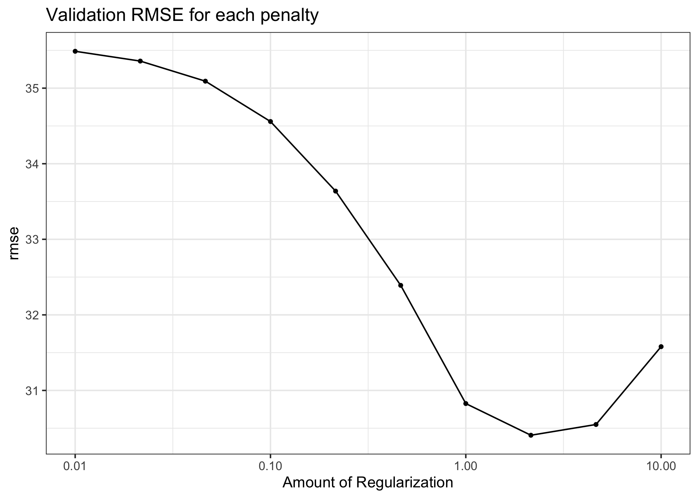
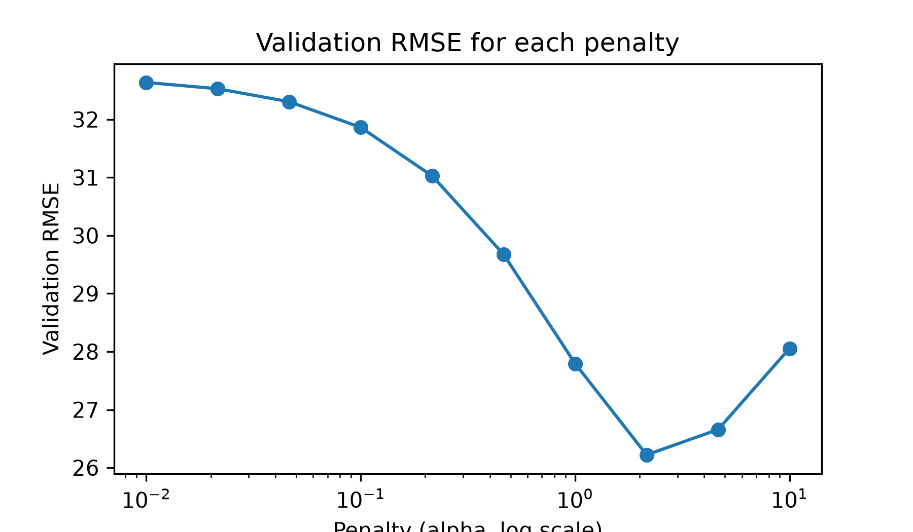

# Packages for this exercise. If one is missing, remove the # and run this line once:
# install.packages(c("tidyverse", "tidymodels", "glmnet"))
library(tidyverse)
library(tidymodels)
theme_set(theme_bw()) # white background for every plot
options(pillar.sigfig = 4) # show four significant figures in tablesExercise 5.2 — Hyperparameters: choosing the lasso penalty
Some settings of a model are not learnt from the data: we choose them before fitting. They are called hyperparameters. The lasso has one that matters most, the size of its penalty, \(\lambda\). A small penalty keeps almost every column; a large one sets more and more coefficients to exactly zero.
We choose \(\lambda\) by trying several values and keeping the one that predicts best on rows the model was not fitted on: a validation set. The test set stays untouched until the very end. This exercise has no blanks: every cell is filled in. Run each one, read what it prints, and make sure you understand each step of the search.
NoteThe plots are for looking at
The code for every plot is folded away just above it, in case you are curious, and all of it is in the notebook linked at the top of each tab. You are not expected to write it yourself.
Download the R notebook with the solutions (.Rmd): the same notebook.
Packages and data
The data are in data/diabetes_markers.csv: the 750 people from earlier exercises. The outcome is glucose. There are five real measurements (pregnant, mass, pedigree, age, and diabetes, 1 for yes and 0 for no) and 150 extra columns, marker_001 to marker_150. The markers are random numbers with no link to glucose, added on purpose. A good model should ignore them.
markers <- read_csv("data/diabetes_markers.csv")
dim(markers)#> [1] 750 156Part 1 — Three sets: training, validation and test
So far we split the data in two. To choose a hyperparameter we need three sets: the model is fitted on the training rows, each penalty is compared on the validation rows, and the chosen model is checked once on the test rows. initial_validation_split() makes all three in one go: 60%, 20% and 20%.
set.seed(42)
split <- initial_validation_split(markers, prop = c(0.6, 0.2))
train <- training(split)
validation <- validation(split)
test <- testing(split)
nrow(train)#> [1] 450nrow(validation)#> [1] 150nrow(test)#> [1] 150val_set <- validation_set(split) # the training/validation pair, ready for tune_grid()
val_set#> # A tibble: 1 × 2
#> splits id
#> <list> <chr>
#> 1 <split [450/150]> validation450 training rows, 150 validation rows and 150 test rows. val_set is a table with a single row: one way of splitting, 450 rows to fit and 150 to assess.
Part 2 — The workflow, with the penalty left open
The recipe standardises every predictor, because the penalty treats all coefficients alike and should not depend on their units. In the model, penalty = tune() means “to be chosen”, and mixture = 1 makes it a lasso.
lasso_rec <- recipe(glucose ~ ., data = train) |>
step_normalize(all_predictors())
lasso_model <- linear_reg(penalty = tune(), mixture = 1) |>
set_engine("glmnet")
lasso_wf <- workflow(lasso_rec, lasso_model)
lasso_wf#> ══ Workflow ════════════════════════════════════════════════════════════════════
#> Preprocessor: Recipe
#> Model: linear_reg()
#>
#> ── Preprocessor ────────────────────────────────────────────────────────────────
#> 1 Recipe Step
#>
#> • step_normalize()
#>
#> ── Model ───────────────────────────────────────────────────────────────────────
#> Linear Regression Model Specification (regression)
#>
#> Main Arguments:
#> penalty = tune()
#> mixture = 1
#>
#> Computational engine: glmnetextract_parameter_set_dials() lists the settings marked with tune(), and what kind of values each one takes:
extract_parameter_set_dials(lasso_wf)
TipWhere to find a model’s hyperparameters
Every tidymodels model lists its hyperparameters (“tuning parameters”) in its help page, for each engine. For this model see linear regression with glmnet, or type ?linear_reg in R. To browse all models and engines, use the tidymodels model search. The ranges and scales used for each hyperparameter in a grid are in the dials reference, for example penalty().
Part 3 — The grid
The grid is the list of penalties to try, one per row. grid_regular() from dials (loaded with tidymodels) makes it for us. penalty() knows that penalties are best spread out on a log scale, so range = c(-2, 1) means from \(10^{-2} = 0.01\) to \(10^{1} = 10\), and levels = 10 gives 10 values evenly spaced on that scale:
penalty_grid <- grid_regular(penalty(range = c(-2, 1)), levels = 10)
penalty_grid#> # A tibble: 10 × 1
#> penalty
#> <dbl>
#> 1 0.01
#> 2 0.02154
#> 3 0.04642
#> 4 0.1
#> 5 0.2154
#> 6 0.4642
#> 7 1
#> 8 2.154
#> 9 4.642
#> 10 10Small penalties are close together and large ones far apart, so each step changes the model by a similar amount.
TipOther kinds of grid
A regular grid is the simplest choice. dials also has grid_random() (random values) and grid_space_filling() (values spread out to cover the range well, for example a Latin hypercube), which help when there are several hyperparameters at once. See the dials grid functions, space-filling grids, and the chapter on grid search in Tidy Modeling with R.
Part 4 — The search
tune_grid() does the work: for each penalty in the grid, it fits the workflow on the 450 training rows and computes the RMSE on the 150 validation rows.
lasso_res <- tune_grid(lasso_wf,
resamples = val_set,
grid = penalty_grid,
metrics = metric_set(rmse))
collect_metrics(lasso_res)#> # A tibble: 10 × 7
#> penalty .metric .estimator mean n std_err .config
#> <dbl> <chr> <chr> <dbl> <int> <dbl> <chr>
#> 1 0.01 rmse standard 35.49 1 NA pre0_mod01_post0
#> 2 0.02154 rmse standard 35.36 1 NA pre0_mod02_post0
#> 3 0.04642 rmse standard 35.09 1 NA pre0_mod03_post0
#> 4 0.1 rmse standard 34.56 1 NA pre0_mod04_post0
#> 5 0.2154 rmse standard 33.64 1 NA pre0_mod05_post0
#> 6 0.4642 rmse standard 32.39 1 NA pre0_mod06_post0
#> 7 1 rmse standard 30.83 1 NA pre0_mod07_post0
#> 8 2.154 rmse standard 30.41 1 NA pre0_mod08_post0
#> 9 4.642 rmse standard 30.55 1 NA pre0_mod09_post0
#> 10 10 rmse standard 31.58 1 NA pre0_mod10_post0collect_metrics() shows one row per penalty. The mean column is the validation RMSE (n is 1 because there is one validation set).
Code for this plot (optional)
autoplot(lasso_res) +
labs(title = "Validation RMSE for each penalty")
best_penalty <- select_best(lasso_res, metric = "rmse")
best_penalty#> # A tibble: 1 × 2
#> penalty .config
#> <dbl> <chr>
#> 1 2.154 pre0_mod08_post0Question! Which penalty predicts best on the validation rows? What happens to the RMSE with a smaller and with a larger penalty?
The validation RMSE is 35.49 with the smallest penalty, falls to 30.41 at a penalty of 2.154, and rises again to 31.58 at 10. Too small a penalty lets the model use the random markers; too large a penalty also removes real measurements.
Part 5 — The final model, checked once on the test rows
finalize_workflow() puts the chosen penalty into the workflow. last_fit() then refits it on the training and validation rows together (600 people) and evaluates it once on the 150 test rows.
final_wf <- finalize_workflow(lasso_wf, best_penalty)
final_fit <- last_fit(final_wf, split, add_validation_set = TRUE)
collect_metrics(final_fit)#> # A tibble: 2 × 4
#> .metric .estimator .estimate .config
#> <chr> <chr> <dbl> <chr>
#> 1 rmse standard 27.93 pre0_mod0_post0
#> 2 rsq standard 0.1860 pre0_mod0_post0Which columns did the lasso keep? These are the coefficients that are not zero:
tidy(extract_fit_parsnip(final_fit)) |>
filter(estimate != 0)#> # A tibble: 12 × 3
#> term estimate penalty
#> <chr> <dbl> <dbl>
#> 1 (Intercept) 125.4 2.154
#> 2 mass 0.7263 2.154
#> 3 age 1.175 2.154
#> 4 diabetes 13.22 2.154
#> 5 marker_008 -0.4885 2.154
#> 6 marker_050 0.6672 2.154
#> 7 marker_052 0.4080 2.154
#> 8 marker_056 -0.4624 2.154
#> 9 marker_060 0.005968 2.154
#> 10 marker_088 0.2528 2.154
#> 11 marker_092 0.9405 2.154
#> 12 marker_130 0.2415 2.154For comparison, the same model without a penalty:
plain_fit <- last_fit(workflow(lasso_rec, linear_reg()), split, add_validation_set = TRUE)
collect_metrics(plain_fit)#> # A tibble: 2 × 4
#> .metric .estimator .estimate .config
#> <chr> <chr> <dbl> <chr>
#> 1 rmse standard 29.11 pre0_mod0_post0
#> 2 rsq standard 0.1759 pre0_mod0_post0Question! How many of the 150 markers did the lasso keep? Which model predicts the test rows better?
The lasso kept 8 markers, with small coefficients, and set the other 142 to zero. Of the real measurements it kept mass, age and diabetes. Its test RMSE is 27.93, against 29.11 without a penalty: the model without a penalty uses every marker, and the noise it learnt from them costs it on new people.
TipKey points
- A hyperparameter is chosen before fitting. For the lasso it is the penalty.
- Training rows fit the model, validation rows choose the penalty, test rows check the final model once.
tune_grid()fits every value in the grid and scores it on the validation rows;select_best()picks one;last_fit()refits and tests.- The lasso set most of the useless markers to zero, and predicted new people better than the model without a penalty.
Download the Jupyter notebook with the solutions (.ipynb): the same notebook.
Packages and data
# Packages for this exercise. If one is missing, install it once from a terminal
# (in a Jupyter notebook, type %pip instead of pip):
# pip install pandas numpy matplotlib scikit-learn
import pandas as pd
import numpy as np
import matplotlib.pyplot as plt
from sklearn.model_selection import train_test_split, GridSearchCV, PredefinedSplit
from sklearn.pipeline import Pipeline
from sklearn.preprocessing import StandardScaler
from sklearn.linear_model import Lasso, LinearRegression
from sklearn.metrics import root_mean_squared_errorThe data are in data/diabetes_markers.csv: the 750 people from earlier exercises. The outcome is glucose. There are five real measurements (pregnant, mass, pedigree, age, and diabetes, 1 for yes and 0 for no) and 150 extra columns, marker_001 to marker_150. The markers are random numbers with no link to glucose, added on purpose. A good model should ignore them.
markers = pd.read_csv("data/diabetes_markers.csv")
print(markers.shape)#> (750, 156)Part 1 — Three sets: training, validation and test
So far we split the data in two. To choose a hyperparameter we need three sets: the model is fitted on the training rows, each penalty is compared on the validation rows, and the chosen model is checked once on the test rows. We split twice with the same function: first 20% for the test set, then a quarter of the rest for the validation set.
train_val, test = train_test_split(markers, test_size=0.2, random_state=42)
train, validation = train_test_split(train_val, test_size=0.25, random_state=42)
print(len(train), len(validation), len(test))#> 450 150 150
# GridSearchCV takes training and validation rows together, plus a marker
# for each row: -1 = used to fit, 0 = used to validate
both = pd.concat([train, validation])
fold = [-1] * len(train) + [0] * len(validation)
val_set = PredefinedSplit(fold)
X_both, y_both = both.drop(columns="glucose"), both["glucose"]
X_test, y_test = test.drop(columns="glucose"), test["glucose"]450 training rows, 150 validation rows and 150 test rows. val_set holds one way of splitting: 450 rows to fit and 150 to assess.
Part 2 — The pipeline, with the penalty left open
The pipeline standardises every predictor, because the penalty treats all coefficients alike and should not depend on their units. In scikit-learn the lasso penalty is called alpha; we leave it out here, because the search will set it.
lasso_pipe = Pipeline([("scale", StandardScaler()),
("model", Lasso(max_iter=100000))])
lasso_pipePipeline(steps=[('scale', StandardScaler()), ('model', Lasso(max_iter=100000))])In a Jupyter environment, please rerun this cell to show the HTML representation or trust the notebook. On GitHub, the HTML representation is unable to render, please try loading this page with nbviewer.org.
Parameters
Parameters
Parameters
get_params() lists every setting of a model with its current value. alpha is the one we will tune:
lasso_pipe["model"].get_params()#> {'alpha': 1.0, 'copy_X': True, 'fit_intercept': True, 'max_iter': 100000, 'positive': False, 'precompute': False, 'random_state': None, 'selection': 'cyclic', 'tol': 0.0001, 'warm_start': False}
TipWhere to find a model’s hyperparameters
Every scikit-learn model lists its settings, with what each one does and its default, on its page in the API reference. For this model see Lasso. Inside a pipeline, put the step name and two underscores in front: model__alpha.
Part 3 — The grid
The grid is the list of penalties to try. np.logspace(-2, 1, 10) gives 10 values from \(10^{-2} = 0.01\) to \(10^{1} = 10\), evenly spaced on a log scale, which suits penalties. The name says which step and which setting the values are for: model__alpha is the alpha of the step called model.
penalty_grid = {"model__alpha": np.logspace(-2, 1, 10)}
print(penalty_grid["model__alpha"].round(3))#> [ 0.01 0.022 0.046 0.1 0.215 0.464 1. 2.154 4.642 10. ]Small penalties are close together and large ones far apart, so each step changes the model by a similar amount.
TipOther kinds of grid
A regular grid is the simplest choice. scikit-learn also has RandomizedSearchCV(), which tries random values instead of a fixed list and helps when there are several hyperparameters at once. See the scikit-learn guide to tuning hyperparameters.
Part 4 — The search
GridSearchCV() does the work: for each penalty in the grid, it fits the pipeline on the 450 training rows and scores it on the 150 validation rows. scikit-learn always maximises its score, so the RMSE comes out negative.
lasso_search = GridSearchCV(lasso_pipe,
param_grid=penalty_grid,
cv=val_set,
scoring="neg_root_mean_squared_error")
lasso_search.fit(X_both, y_both)GridSearchCV(cv=PredefinedSplit(test_fold=array([-1, -1, ..., 0, 0], shape=(600,))),
estimator=Pipeline(steps=[('scale', StandardScaler()),
('model', Lasso(max_iter=100000))]),
param_grid={'model__alpha': array([ 0.01 , 0.02154435, 0.04641589, 0.1 , 0.21544347,
0.46415888, 1. , 2.15443469, 4.64158883, 10. ])},
scoring='neg_root_mean_squared_error')In a Jupyter environment, please rerun this cell to show the HTML representation or trust the notebook. On GitHub, the HTML representation is unable to render, please try loading this page with nbviewer.org.
Parameters
Fitted attributes
Parameters
Fitted attributes
100 of 155 features
| pregnant |
| mass |
| pedigree |
| age |
| diabetes |
| marker_001 |
| marker_002 |
| marker_003 |
| marker_004 |
| marker_005 |
| marker_006 |
| marker_007 |
| marker_008 |
| marker_009 |
| marker_010 |
| marker_011 |
| marker_012 |
| marker_013 |
| marker_014 |
| marker_015 |
| marker_016 |
| marker_017 |
| marker_018 |
| marker_019 |
| marker_020 |
| marker_021 |
| marker_022 |
| marker_023 |
| marker_024 |
| marker_025 |
| marker_026 |
| marker_027 |
| marker_028 |
| marker_029 |
| marker_030 |
| marker_031 |
| marker_032 |
| marker_033 |
| marker_034 |
| marker_035 |
| marker_036 |
| marker_037 |
| marker_038 |
| marker_039 |
| marker_040 |
| marker_041 |
| marker_042 |
| marker_043 |
| marker_044 |
| marker_045 |
| marker_046 |
| marker_047 |
| marker_048 |
| marker_049 |
| marker_050 |
| marker_051 |
| marker_052 |
| marker_053 |
| marker_054 |
| marker_055 |
| marker_056 |
| marker_057 |
| marker_058 |
| marker_059 |
| marker_060 |
| marker_061 |
| marker_062 |
| marker_063 |
| marker_064 |
| marker_065 |
| marker_066 |
| marker_067 |
| marker_068 |
| marker_069 |
| marker_070 |
| marker_071 |
| marker_072 |
| marker_073 |
| marker_074 |
| marker_075 |
| marker_076 |
| marker_077 |
| marker_078 |
| marker_079 |
| marker_080 |
| marker_081 |
| marker_082 |
| marker_083 |
| marker_084 |
| marker_085 |
| marker_086 |
| marker_087 |
| marker_088 |
| marker_089 |
| marker_090 |
| marker_091 |
| marker_092 |
| marker_093 |
| marker_094 |
| marker_095 |
Parameters
Fitted attributes
results = pd.DataFrame({"penalty": lasso_search.cv_results_["param_model__alpha"],
"val_rmse": -lasso_search.cv_results_["mean_test_score"]})
print(results.astype(float).round(3))#> penalty val_rmse
#> 0 0.010 32.637
#> 1 0.022 32.529
#> 2 0.046 32.305
#> 3 0.100 31.863
#> 4 0.215 31.027
#> 5 0.464 29.674
#> 6 1.000 27.794
#> 7 2.154 26.221
#> 8 4.642 26.658
#> 9 10.000 28.056One row per penalty, with its validation RMSE.
Code for this plot (optional)
fig, ax = plt.subplots(figsize=(6, 3.5))
ax.plot(results["penalty"].astype(float), results["val_rmse"], marker="o")
ax.set_xscale("log")
ax.set_xlabel("Penalty (alpha, log scale)")
ax.set_ylabel("Validation RMSE")
ax.set_title("Validation RMSE for each penalty")
plt.show()
print(lasso_search.best_params_)#> {'model__alpha': np.float64(2.154434690031882)}Question! Which penalty predicts best on the validation rows? What happens to the RMSE with a smaller and with a larger penalty?
The validation RMSE is 32.64 with the smallest penalty, falls to 26.22 at a penalty of 2.154, and rises again to 28.06 at 10. Too small a penalty lets the model use the random markers; too large a penalty also removes real measurements.
Part 5 — The final model, checked once on the test rows
After the search, GridSearchCV() has already refitted the pipeline with the chosen penalty on the training and validation rows together (600 people): that is best_estimator_. Check it once on the 150 test rows.
final_model = lasso_search.best_estimator_
print("test RMSE:", round(root_mean_squared_error(y_test, final_model.predict(X_test)), 2))#> test RMSE: 27.19Which columns did the lasso keep? These are the coefficients that are not zero:
coefs = pd.Series(final_model["model"].coef_, index=X_both.columns)
print(coefs[coefs != 0].round(2))#> mass 0.59
#> age 2.05
#> diabetes 12.39
#> marker_008 -0.50
#> marker_032 0.20
#> marker_043 -0.30
#> marker_050 1.38
#> marker_052 1.22
#> marker_060 0.44
#> marker_068 0.11
#> marker_112 0.41
#> dtype: float64For comparison, the same model without a penalty:
plain = Pipeline([("scale", StandardScaler()), ("model", LinearRegression())])
plain.fit(X_both, y_both)Pipeline(steps=[('scale', StandardScaler()), ('model', LinearRegression())])In a Jupyter environment, please rerun this cell to show the HTML representation or trust the notebook. On GitHub, the HTML representation is unable to render, please try loading this page with nbviewer.org.
Parameters
Fitted attributes
| Name | Type | Value |
|---|---|---|
| feature_names_in_ feature_names_in_: ndarray of shape (`n_features_in_`,) Names of features seen during :term:`fit`. Only defined if the underlying estimator exposes such an attribute when fit. .. versionadded:: 1.0 |
ndarray[object](155,) | ['pregnant','mass','pedigree',...,'marker_148','marker_149','marker_150'] |
| n_features_in_ n_features_in_: int Number of features seen during :term:`fit`. Only defined if the underlying first estimator in `steps` exposes such an attribute when fit. .. versionadded:: 0.24 |
int | 155 |
Parameters
Fitted attributes
100 of 155 features
| pregnant |
| mass |
| pedigree |
| age |
| diabetes |
| marker_001 |
| marker_002 |
| marker_003 |
| marker_004 |
| marker_005 |
| marker_006 |
| marker_007 |
| marker_008 |
| marker_009 |
| marker_010 |
| marker_011 |
| marker_012 |
| marker_013 |
| marker_014 |
| marker_015 |
| marker_016 |
| marker_017 |
| marker_018 |
| marker_019 |
| marker_020 |
| marker_021 |
| marker_022 |
| marker_023 |
| marker_024 |
| marker_025 |
| marker_026 |
| marker_027 |
| marker_028 |
| marker_029 |
| marker_030 |
| marker_031 |
| marker_032 |
| marker_033 |
| marker_034 |
| marker_035 |
| marker_036 |
| marker_037 |
| marker_038 |
| marker_039 |
| marker_040 |
| marker_041 |
| marker_042 |
| marker_043 |
| marker_044 |
| marker_045 |
| marker_046 |
| marker_047 |
| marker_048 |
| marker_049 |
| marker_050 |
| marker_051 |
| marker_052 |
| marker_053 |
| marker_054 |
| marker_055 |
| marker_056 |
| marker_057 |
| marker_058 |
| marker_059 |
| marker_060 |
| marker_061 |
| marker_062 |
| marker_063 |
| marker_064 |
| marker_065 |
| marker_066 |
| marker_067 |
| marker_068 |
| marker_069 |
| marker_070 |
| marker_071 |
| marker_072 |
| marker_073 |
| marker_074 |
| marker_075 |
| marker_076 |
| marker_077 |
| marker_078 |
| marker_079 |
| marker_080 |
| marker_081 |
| marker_082 |
| marker_083 |
| marker_084 |
| marker_085 |
| marker_086 |
| marker_087 |
| marker_088 |
| marker_089 |
| marker_090 |
| marker_091 |
| marker_092 |
| marker_093 |
| marker_094 |
| marker_095 |
Parameters
Fitted attributes
print("test RMSE:", round(root_mean_squared_error(y_test, plain.predict(X_test)), 2))#> test RMSE: 31.24Question! How many of the 150 markers did the lasso keep? Which model predicts the test rows better?
The lasso kept 8 markers, with small coefficients, and set the other 142 to zero. Of the real measurements it kept mass, age and diabetes. Its test RMSE is 27.19, against 31.24 without a penalty: the model without a penalty uses every marker, and the noise it learnt from them costs it on new people.
TipKey points
- A hyperparameter is chosen before fitting. For the lasso it is the penalty,
alpha. - Training rows fit the model, validation rows choose the penalty, test rows check the final model once.
GridSearchCV()fits every value in the grid and scores it on the validation rows;best_params_is the choice;best_estimator_is the refitted model.- The lasso set most of the useless markers to zero, and predicted new people better than the model without a penalty.
NoteWhat comes next
The lasso and ridge mix (mixture in R, l1_ratio with ElasticNet in Python) is a second hyperparameter, tuned the same way by adding it to the grid. Exercise 5.3 replaces the single validation set with cross-validation, which repeats the comparison on several splits of the training rows. The reading at the end of the day, Lasso and ridge in a picture, shows why the lasso can set a coefficient to exactly zero.